第I部 身近な植物を知る
1. 植物を見るということ
植物を知るとき、最初に名前を覚える必要はありません。名前は役立ちますが、名前だけで分かった気になると、その植物がどのように生きているかを見落としやすくなります。まずは植物の姿と、その植物が置かれている場所を丁寧に見ます。
地面を低くはうもの、空へ伸びるもの、ほかの植物につかまってのびるもの。冬にも葉を残すもの、春だけ急いで花を咲かせるもの。厚い葉に水をためるもの、細い葉をたくさん出して風を受け流すもの。こうした違いは偶然の飾りではなく、日光、水、土、気温、風、周りの生き物という条件の中でくらすための、体のつくりの違いです。
色だけでなく、根を下ろしている場所、茎の立ち方、葉のつき方、花や実の有無にも目を向けます。日なたと日かげでは、同じ種類でも葉の大きさや色が違うことがあります。植物の姿は、遺伝的な特徴だけでなく、そのとき置かれた環境からも影響を受けています。


名前がわからなくても大丈夫。「どこに生えている？」「葉はどんな形？」「花や実はある？」と順に見るだけで、植物のくらしが見え始めるよ。
2. 植物の一生
花を咲かせる植物の多くは、種子から始まり、成長して花をつけ、実の中に次の種子をつくります。種子の中には、将来根・茎・葉になる部分のもとである胚と、発芽の最初を支える養分が入っています。水を吸い、空気を使い、適した温度になると発芽が始まります。
葉が開くと、幼い植物は光合成で自分の養分をつくり始めます。成長後につくる花は、花粉を運んでもらい、受精して次の世代の種子をつくるための器官です。受精の後、胚珠は種子に、子房は実になります。実は種子を守るだけでなく、動物、風、水などを利用して種子を遠くへ運ぶ役目も果たします。
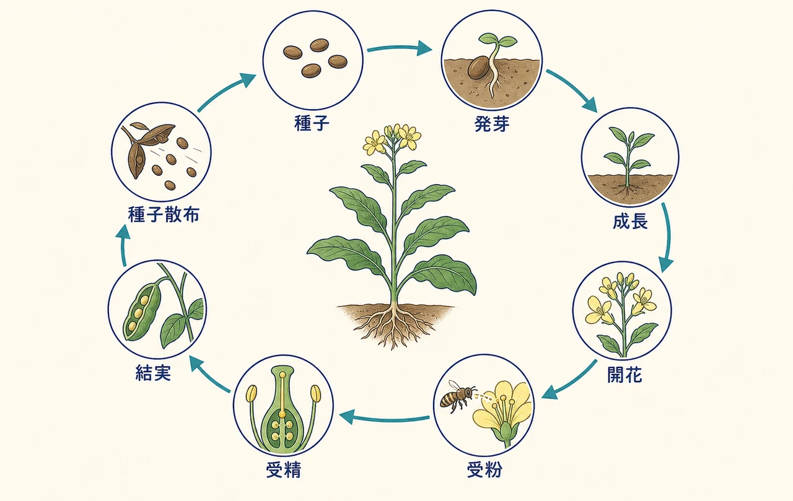
3. 根・茎・葉・花・実
根は体を地面に支え、水と水に溶けた無機養分を吸収します。先端近くの根毛は土に触れる面積を広げています。茎は葉や花を支える柱であり、根と葉の間を物質が行き来する道です。木では茎が太くなることで、枝や葉を高い場所へ広げられます。
葉は日光を受け、空気中の二酸化炭素を取り入れ、光合成で養分をつくる主な場所です。葉脈は水や養分の通り道であると同時に、葉を支える骨組みでもあります。花は種子をつくる器官、実は種子を包む構造です。基本の流れは、受精後に子房が実となり、胚珠が種子になることです。
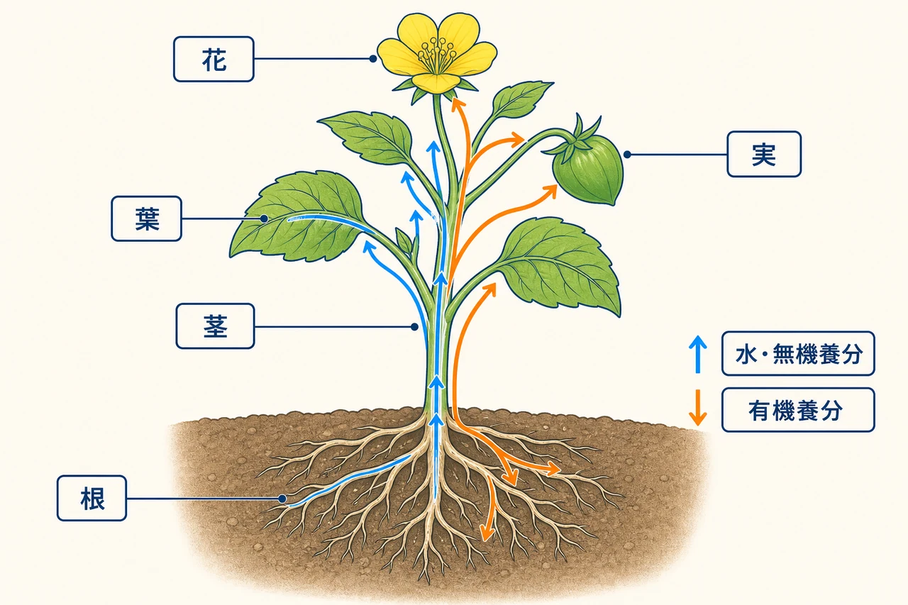
4. 植物はどのように大きくなるか
植物は体全体が同じように大きくなるのではありません。根や茎の先端には細胞分裂が盛んな部分があり、そこで新しい細胞がつくられます。新しい細胞が大きくなり、役割に応じた形に変わることで、根、茎、葉、花などがつくられていきます。
成長には水、無機養分、二酸化炭素、日光、適した温度が必要です。一つでも長く足りなければ成長は弱まります。春に芽を出す、夏に急速に育つ、秋に種子をつくる、冬に休眠するといった時間の使い方も、動けない植物が環境に対応する大切な方法です。
第II部 植物の体の中で起きていること
5. 細胞からできた植物の体
植物の体は、たくさんの細胞からできています。細胞は生き物の体をつくる基本単位です。植物細胞には動物細胞と共通する細胞膜、細胞質、核があります。核には遺伝情報があり、細胞の働きを支えています。
さらに植物細胞には、形を支える細胞壁、光合成を行う葉緑体、水やさまざまな物質をためる大きな液胞があります。葉緑体を多くもつ葉の細胞、表面を守る表皮の細胞、水を運びやすい形になった細胞などが協力して、一つの植物の体を成り立たせています。
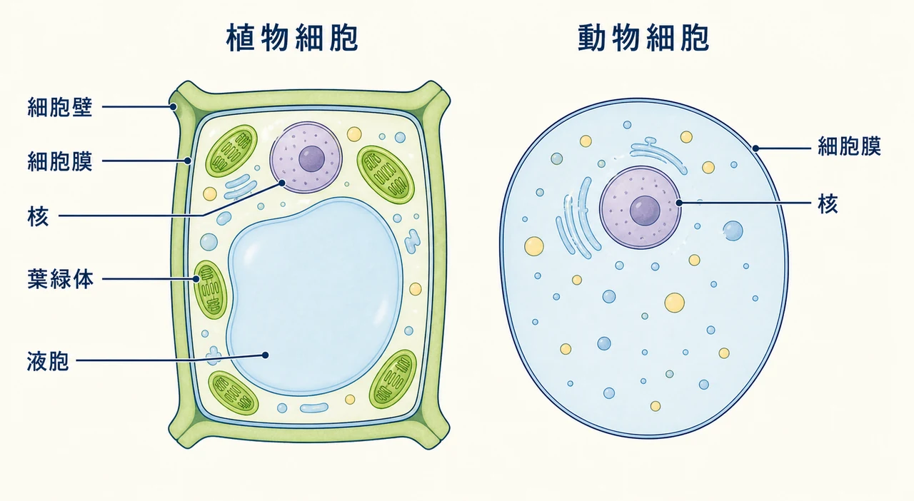
6. 葉が養分をつくる
葉の緑色の部分にある葉緑体では、光合成が行われます。これは日光のエネルギーを使い、二酸化炭素と水から有機養分をつくる働きです。その過程で酸素が生じます。
二酸化炭素 + 水 → 有機養分 + 酸素 （光のエネルギーを使う）
植物は土を食べて大きくなるのではありません。土から吸うのは水と無機養分で、体をつくる有機物の大きなもとは空気中から取り入れた二酸化炭素です。平たく薄い葉は光を受けやすく、内部の空気の通り道、葉脈、気孔をあわせて、光・空気・水・輸送の仕組みを一枚に集めています。
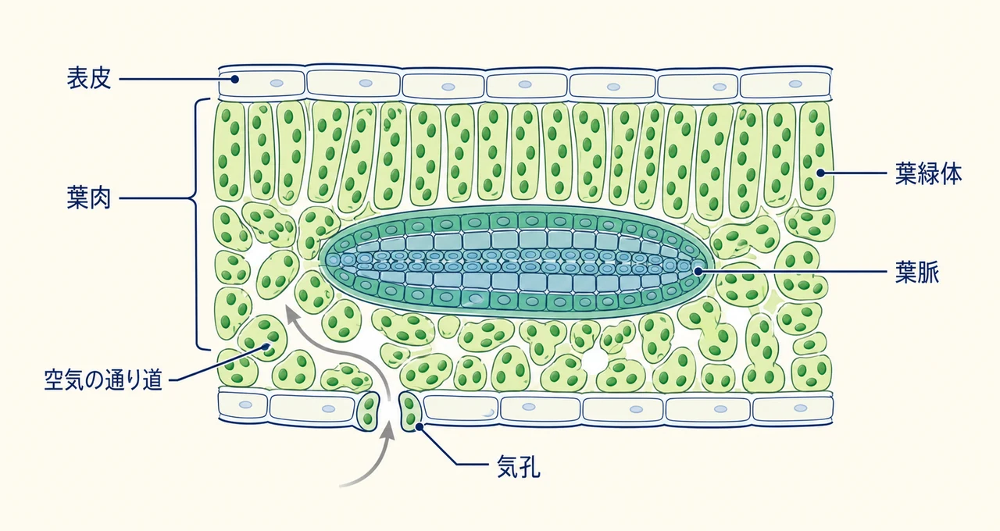
7. 根から葉へ、水を運ぶ
根から吸収した水と無機養分は、主に道管を通って葉へ向かいます。道管は根、茎、葉脈までつながっています。根が水を取り入れるだけでなく、葉から水が水蒸気として出ていくことも、上向きの水の流れを保つことに関わります。
水は光合成の材料になるだけではありません。細胞の中で物質を運び、細胞の形を保ち、温度の調節にも関わります。水が足りないと細胞の張りが弱くなり、葉や茎がしおれることがあります。窒素、リン、カリウムなどの無機養分も、たんぱく質や核酸などをつくるために欠かせません。
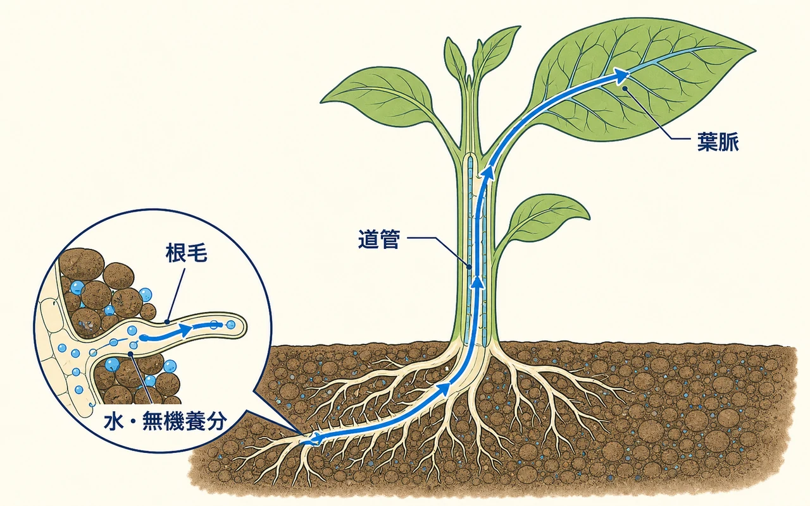
8. 葉でつくられた養分を配る
葉でつくられた有機養分は、葉だけで使われるわけではありません。新しい根、芽、花、実、種子、地下茎などにも届けられます。この輸送に主に関わる通り道が師管です。道管が主に水と無機養分を根から上へ運ぶのに対し、師管は葉でつくられた有機養分を、そのとき必要な場所へ配ります。
師管の流れはいつも上向きとは限りません。根も地下で呼吸し、成長し、水や無機養分を吸収するためにエネルギーを使うので、葉でつくられた養分が必要です。根・茎・葉は、物質をやり取りする一つのシステムです。
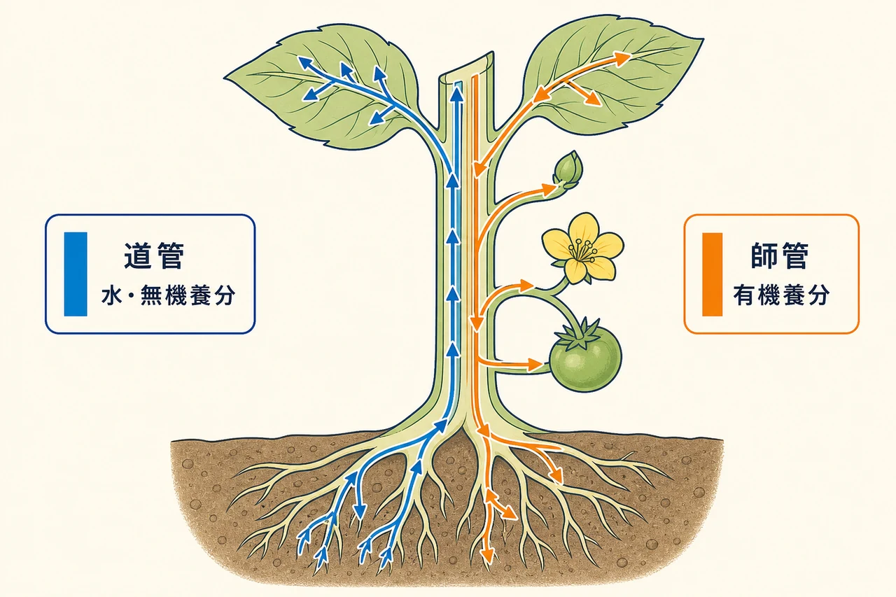
9. 植物も呼吸する
植物は光合成をする一方で、同時に呼吸もしています。呼吸は有機養分を分解し、生命活動に使うエネルギーを取り出す働きです。酸素を使い、二酸化炭素と水が生じます。
有機養分 + 酸素 → 二酸化炭素 + 水 + 生命活動に使うエネルギー
光合成は光のエネルギーを有機養分にたくわえる働き、呼吸はそこにたくわえられたエネルギーを細胞が使える形で取り出す働きです。呼吸は葉だけでなく、根、茎、花、実、種子など、生きた細胞がある場所で行われます。昼は緑の葉で光合成と呼吸が同時に進み、夜は呼吸だけが続きます。
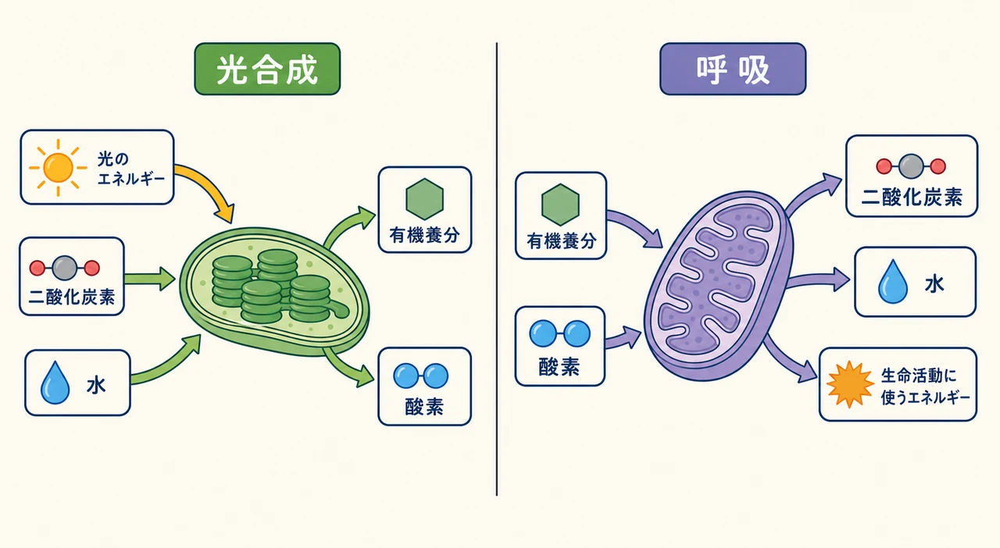
「植物は昼だけ働く」と思われがちだけれど、根も花も実も、生きた細胞は昼も夜も呼吸しているよ。
10. 気孔と蒸散
葉の表面には、気孔という小さなすき間があります。気孔は二酸化炭素を葉の内部へ入れ、酸素と水蒸気を外へ出す出入り口です。気孔から水蒸気が出ていく現象を蒸散といいます。
蒸散は水を失うだけの現象ではありません。根から葉へ水を運ぶ流れに関わり、葉の温度が上がりすぎることも抑えます。ただし気孔を開いたままにすると水を失いすぎ、閉じると二酸化炭素を取り込みにくくなります。植物は気孔の開閉によって、水を守ることと光合成を続けることの間を調節しています。
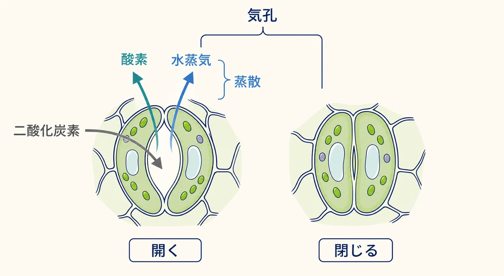
第III部 子孫を残し、多様に生きる
11. 花から実と種子へ
花を咲かせる植物では、花の中で種子がつくられます。典型的な花には、花粉をつくるおしべと、胚珠を含むめしべがあります。おしべでつくられた花粉が、めしべの柱頭に届くことを受粉といいます。
受粉の後、花粉から伸びた花粉管を通じて、胚珠の中で受精が起こります。受精後、胚珠は種子へ、子房は実へ発達します。昆虫に運ばれる花は蜜や香り、目立つ色をもつことが多く、風に運ばれる花は軽い花粉を多くつくり、花びらが目立たないこともあります。花や実の形は、花粉や種子を確実に運ぶ仕組みの一部です。
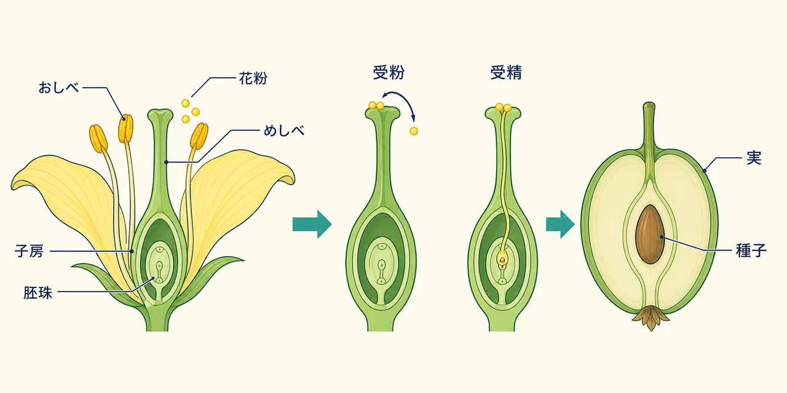
12. 種子を使わない増え方
植物は種子だけで増えるわけではありません。茎、根、葉などから新しい個体をつくる方法を栄養生殖といいます。イチゴのほふく茎、ジャガイモのいも、球根、地下茎などが例です。栄養生殖でできた新しい個体は、基本的に親と同じ遺伝情報をもちます。
受精をともなう種子による生殖では、親から受け取った遺伝情報が組み合わさるため、子にはさまざまな違いが生まれます。栄養生殖は都合のよい性質を保ちながら近くへ素早く広がるのに向き、種子による生殖は新しい場所へ広がり多様な子を生み出すことに向きます。多くの植物は状況に応じて、複数の方法を使います。
13. コケから花を咲かせる植物まで
陸上の植物は、学校では大まかにコケ植物、シダ植物、種子植物に分けて考えます。種子植物はさらに裸子植物と被子植物に分けられます。コケ植物は湿った場所に多く、仮根で体を支え、胞子で増えます。シダ植物も胞子で増えます。どちらも花や種子をつくりません。
裸子植物は種子をつくりますが、胚珠が子房に包まれていません。マツやスギの仲間は裸子植物で、球果に種子をつくります。被子植物は花を咲かせ、胚珠が子房に包まれています。身近な草花、果樹、野菜、広葉樹の多くは被子植物です。進化は単純に優劣を並べる話ではなく、それぞれの系統が異なる環境に適応してきた歴史です。
藻類は水中でくらす光合成生物を含む大きなまとまりですが、分類上は非常に多様です。菌類は以前に植物と一緒に扱われることもありましたが、光合成をせず、系統的にも植物とは別の生物群です。
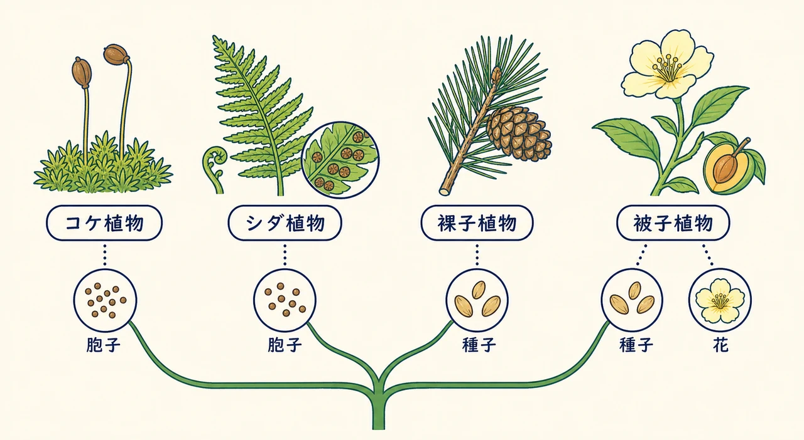
14. 植物と生態系
生態系とは、生き物どうしの関係と、生き物を取り巻く光、水、空気、土、温度などの環境を合わせた仕組みです。植物は光合成によって有機養分をつくるため、生態系では生産者と呼ばれます。草食動物は植物を食べ、肉食動物はほかの動物を食べます。実際の自然では多くの生き物が複雑に関わるため、食べる・食べられる関係は網の目のような食物網として考えるほうが近くなります。
枯れた葉や倒れた木、死んだ生き物は、菌類、細菌、小さな動物などによって分解されます。分解によって、植物が再び利用できる無機養分が土へ戻ります。植物が有機物をつくり、動物や分解者がそれを利用し、物質が環境の中をめぐる。この循環が生態系を支えています。
植物は食べ物の出発点であるだけではありません。昆虫や鳥のすみかになり、根で土を支え、日かげをつくり、水の流れにも影響します。植物を学ぶことは、花や木の名前を増やすことだけでなく、食料、気候、水、土、生物多様性、人の暮らしのつながりを知ることでもあります。
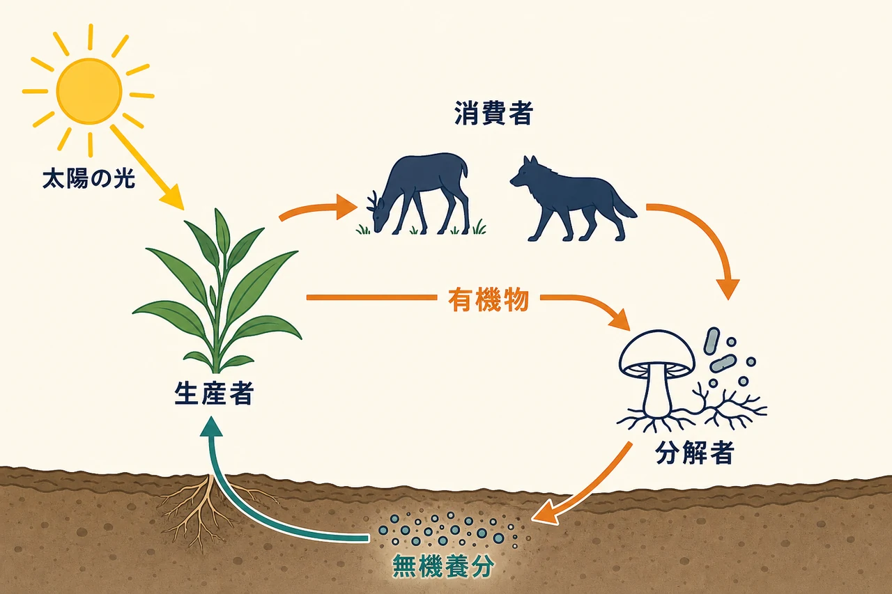
落ち葉は「いらないもの」ではなく、分解されて土へ戻る大事な材料。植物は、ほかの生き物と切り離されずにくらしているんだね。
用語の小さな索引
- 維管束：道管や師管を含む、植物の体内で物質を運ぶ組織。
- 液胞：植物細胞の中で水や物質をためる構造。
- 栄養生殖：根・茎・葉などから新しい個体をつくる増え方。
- 気孔：葉の表皮にある、気体と水蒸気の出入り口。
- 光合成：光のエネルギーを使って、二酸化炭素と水から有機養分をつくる働き。
- 師管：葉でつくられた有機養分を必要な場所へ運ぶ通り道。
- 蒸散：主に葉の気孔から水蒸気が出る現象。
- 生産者：光合成などによって有機物をつくる生き物。生態系では植物が代表的です。
- 細胞壁：植物細胞の外側にあり、細胞の形を支える構造。
- 道管：根から吸収した水と無機養分を主に上へ運ぶ通り道。
- 胚：種子の中にある、将来新しい植物になる部分。
- 葉緑体：植物細胞の中で光合成を行う構造。